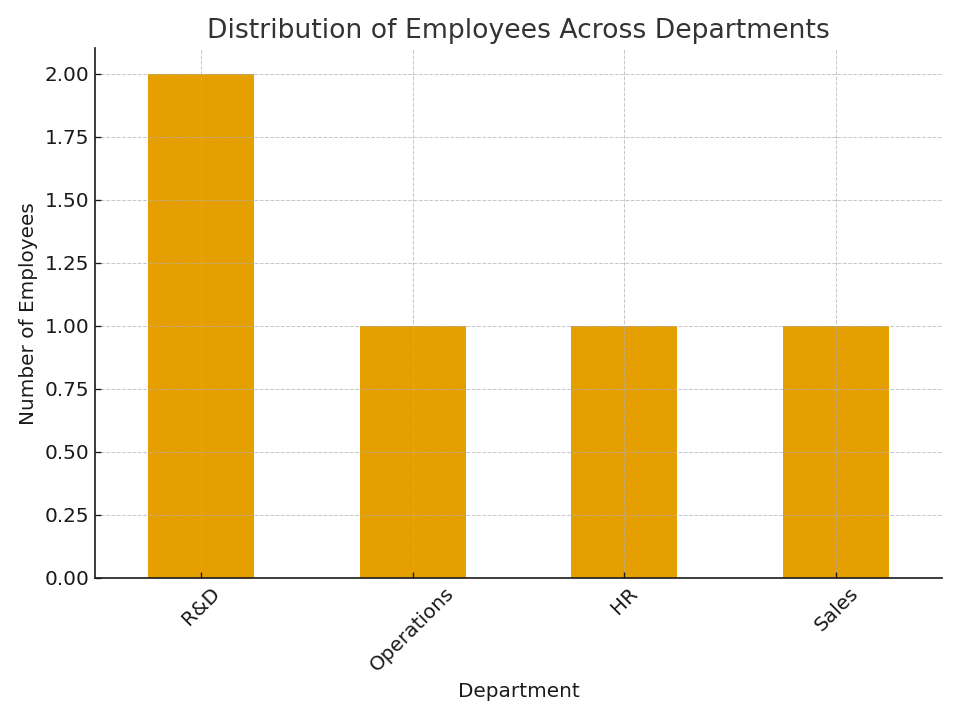

Number of employees in Sales department: 1
The chart below shows the distribution of employees across different departments in the sample dataset.
Below is the Python code that loads the data, calculates the Sales frequency, and generates the visualization:
import pandas as pd
import matplotlib.pyplot as plt
# Load the employee data
df = pd.read_csv("employee_performance.csv")
# Calculate the frequency count for the "Sales" department
sales_count = (df["department"] == "Sales").sum()
print(f"Number of employees in Sales department: {sales_count}")
# Create a histogram (bar chart) showing the distribution of departments
plt.figure(figsize=(8, 6))
dept_counts = df["department"].value_counts()
dept_counts.plot(kind="bar")
plt.xlabel("Department")
plt.ylabel("Number of Employees")
plt.title("Distribution of Employees Across Departments")
plt.xticks(rotation=45)
plt.tight_layout()
# Save the figure
plt.savefig("department_distribution.png", dpi=120)
# plt.show() # Uncomment if you want to display the plot interactively